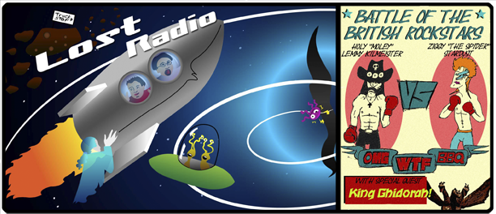

This is a crazy one folks! Dr. Lorre has perfected the chemical properties of Chemical 97 with plans to combine its power with that of the god Aries. The aliens arrive for one last visit, only to trip out and discover cultural creativity for the first time, with Ned leading them forth in a mission to bring this new knowledge to their planet. Finally King Ghirdorah comes by to be a nuisance, and Lemmy shows up to give Ziggy a lesson on who's the real rockstar.